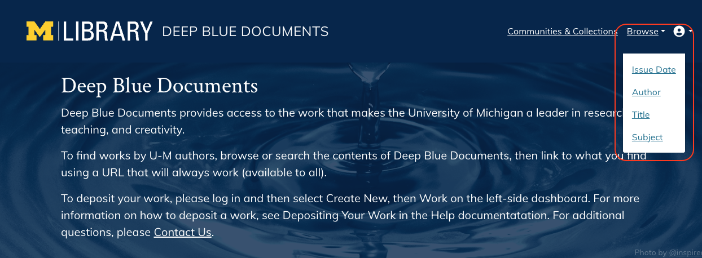
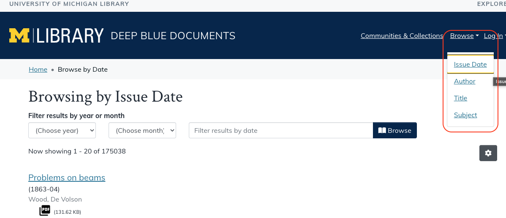
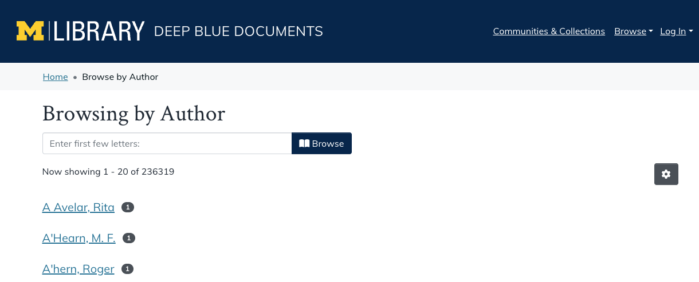
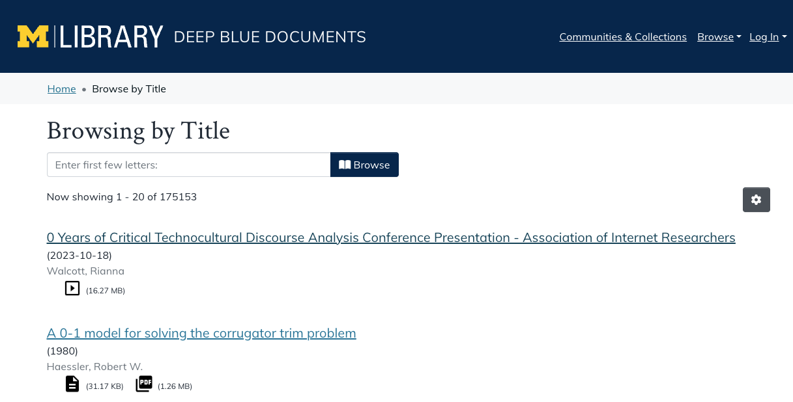
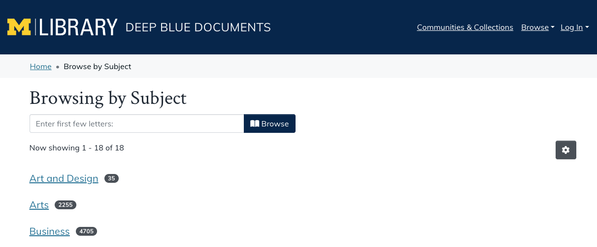
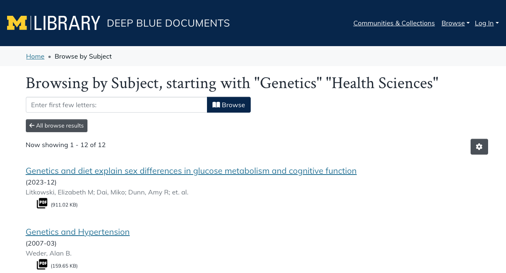
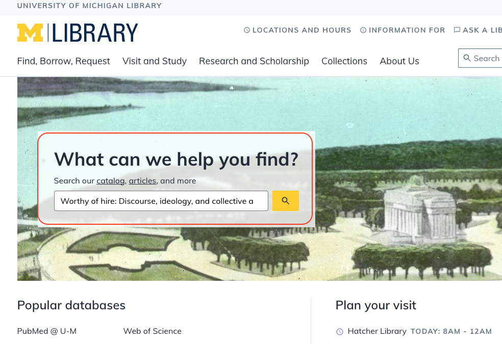
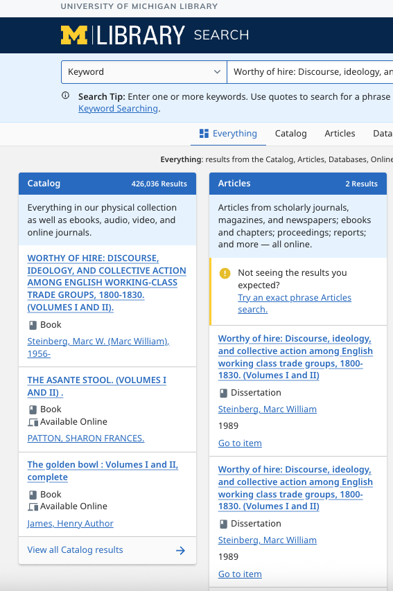
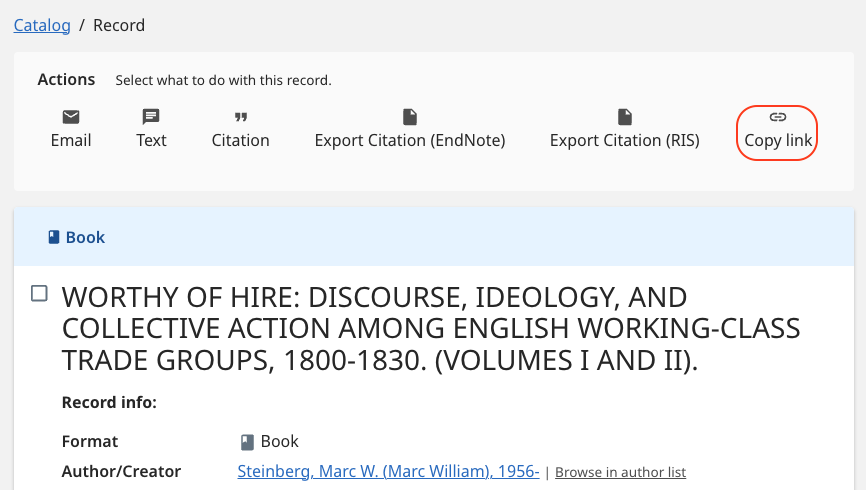
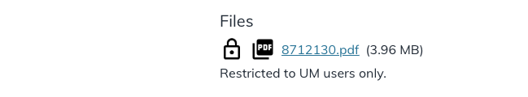

Finding Works in Deep Blue Documents
Browsing Deep Blue Documents
Most Works on Deep Blue Documents can be browsed by issue date, author, title, or subject. Where Search looks for the targeted character string at any position within many different metadata fields, Browse matches input only to a specific metadata field, and only to the beginning of the value string (also known as being “left-anchored”). This means that Browse only looks at the beginning of the author name, title, etc. To browse for Works, you can navigate to the top right of the homepage and hover over “Browse,” then select one of the four options in the dropdown menu:

Browsing by Issue Date
Browsing by issue date allows you to search for Works that were published in a specific year, month, or date. To filter by year, select the “(Choose year)” box and choose a year from the dropdown menu. To filter by month, select the “(Choose month)” box and choose a month from the dropdown menu. The results will automatically populate after selecting the Year, Month, or both. You can also search for an exact date (format: YYYY-MM-DD) in the “Filter results by date” box. Select “Browse” to see results:

Browsing by Author
To browse Works by an author's name, type the last name of the author into the box that says “Enter first few letters:”. To search for all authors whose last names begin with a single letter, type that letter (e.g., typing “A” and selecting “Browse” will result in all authors whose last names start with the letter A). In the list of authors’ names, the dark circle with the number on the right-hand side of the name denotes the number of Works that the author has published in Deep Blue Documents. Select the author’s name to view a list of all published works by the author. Please note that there may be variations in an author’s name. For example, Jacob Carlson could also appear in the record as J. Carlson or Jake Carlson, which is why we recommend searching by the author’s last name (family name or surname):

Browsing by Title
To browse Works by Title, type the title into the box that says “Enter first few letters:” and select “Browse”. Typing a keyword into the search box will provide a list of Work titles that start with that keyword. Select a Title to view the corresponding Work.

Browsing by Subject
To browse Works by Subject, review the list of Subjects on the page and choose the Subject that most closely aligns with your interest. In the list of Subjects, the dark circle with the number on the right-hand side of the Subject name denotes the number of Works included within each Subject at Deep Blue Documents. Select a Subject to view the Works within each category:

After selecting your desired Subject, you can browse titles within the Subject by typing word(s) in the text box and selecting “Browse.” The image below depicts some of the Works within the Subject “Health Sciences” that have a title starting with the word “Genetics”. Select the title of the Work to access the Work:

Finding a University of Michigan Dissertation
The easiest way to find a University of Michigan dissertation in Deep Blue Documents for which you know the author and/or title is to browse the Dissertations and Theses (Ph.D and Master’s) collection using the instructions above on “Browsing by Title” or “Browsing by Author.”
If you can’t find the dissertation you are looking for that way, you can also expand your search to the entire Library, since not all dissertations held by the Library are in Deep Blue Documents. Note that while some dissertations are publicly accessible online, if you do not have current University of Michigan login credentials, physical dissertations (paper or microfilm) are restricted to on-campus use or request through Interlibrary Loan at your local library.
Some digital dissertations in Deep Blue Documents are also restricted to on-campus use (i.e., on specific computers in the Library) or to those signed in with current University of Michigan credentials. This is usually done in cases where we have not been able to secure author permissions to share the dissertations publicly.
To find a dissertation for which you know the author and/or title in the Library:
- Go to the library's homepage (lib.umich.edu) and search for the dissertation title (do not include a period at the end) or the author's name in the "What can we help you find" box:
- If you see results that match your searched title or author, the Library has a copy of this dissertation! (See example below). To determine whether the library has physical, digital, or both types of formats, review the relevant search results (you may notice that there is more than one result, which means there is more than one copy or format):
- Each result in the "Catalog" section represents a physical copy (paper and/or microfilm) held by the Library.
- Each result in the "Articles" section represents a digital copy. This could be located in Deep Blue Documents, ProQuest Dissertations (requires U-M or other SSO to search), and/or Hathitrust.
- Select an individual result to see additional information, including which format(s) it represents and which Library buildings it's held at. You may need to explore multiple results to determine if there is a publicly available digital copy.


Your University of Michigan dissertation
If you are a graduate of the University of Michigan and wrote/submitted a dissertation, some additional options are available to you even if your dissertation is not publicly available:
- If the Library has a digital copy of your dissertation hosted on Deep Blue Documents that is restricted to U-M access only (see instructions for "Finding a dissertation" above and screenshot below), and you would like a copy, please fill out our Contact us form, select the “Unable to access Work” > “Dissertation or Thesis restricted to U-M users” option, and follow the instructions given.
- If the Library has a digital copy of your dissertation hosted on Deep Blue Documents that is restricted to U-M access only (see example below), and you would like to make it publicly available, please fill out our Contact us form, select the “Changes to my Work” > “I want to make my work publicly available" option, and follow the instructions given.
- If the library only has a physical copy of your dissertation (refer to the step 2 screenshot of Library Search above), and you would like to make a digital copy publicly available via Deep Blue Documents*, please go to our Contact us form and select the “Other” option. Make sure to include your name, the title of your dissertation, and a link to the record for the physical copy of your dissertation in the library catalog:

Screenshot of where to find a link to a library catalog record. The “Copy link” option is circled in red. *Please be aware that the minimum timeframe for getting material digitized is about 8 weeks, as this depends on the capacity of our partner units.

Need more help? If you run into trouble or are not sure whether the Library has your dissertation after following the instructions above, please go to our Contact us form, select the “Other” option and include a message explaining the issue. Make sure to include your name, date of graduation and the title of your dissertation.